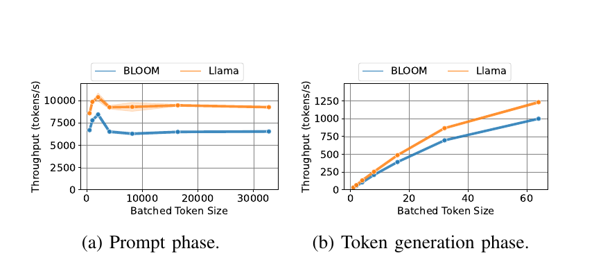
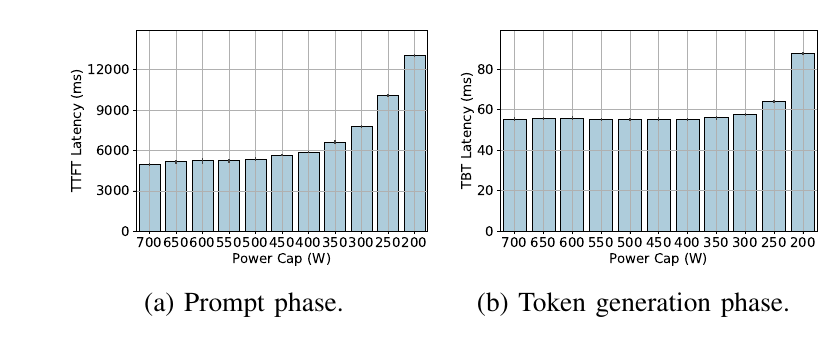
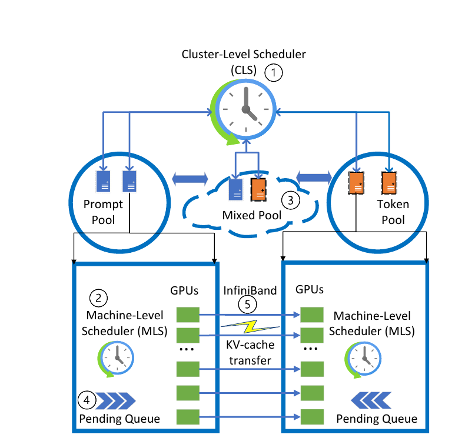
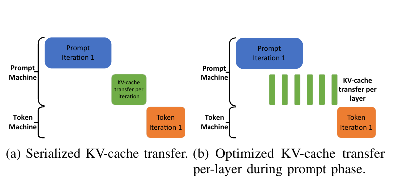
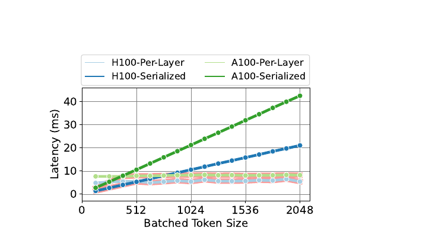
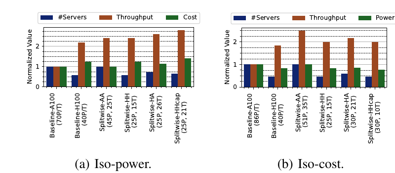
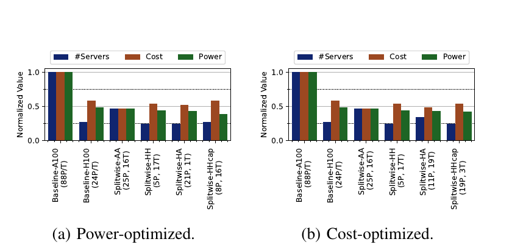
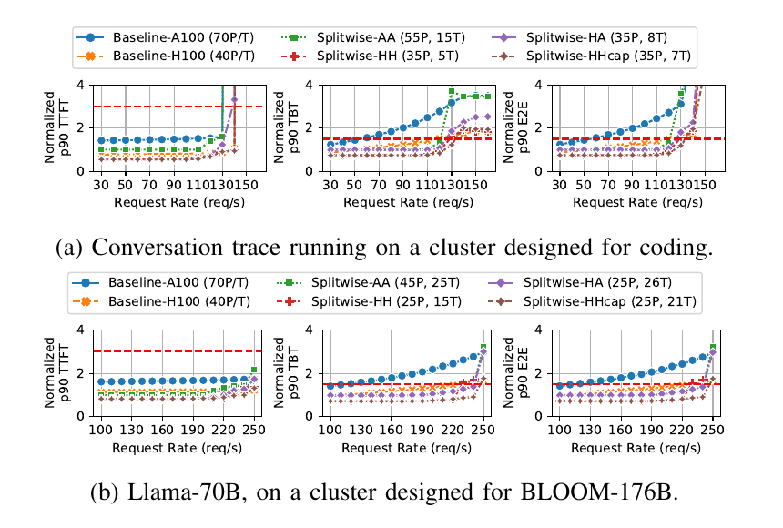

Splitwise: Efficient Generative LLM Inference Using Phase Splitting
把 prompt 計算（prefill）與逐 token 生成（decode）留在同一台昂貴 GPU 上，會迫使同一套硬體與批次策略同時服務「偏計算」與「偏記憶體」的兩種工作。Splitwise 將兩階段拆到獨立資源池，先配對 prompt／token machine，再以逐層非同步 KV cache 傳輸和可回退的 mixed pool 守住延遲。作者主張論文摘要報告最高可同時得到 1.4× 吞吐與 20% 較低成本，或在相同成本與功率預算下得到 2.35× 吞吐；但大規模 cluster 數字來自以生產 trace 驅動的模擬，而非線上部署實測。 Abstract、§V–VI · PDF p.1、8–12
文章目錄
要看懂 Splitwise，先抓住哪三個量？
閱讀障礙不是 Transformer 數學，而是容易把「一次推論」想成單一、均質的 GPU 工作。Splitwise 的全部設計建立在三個最小概念上：兩階段的資料相依、使用者看到的延遲指標，以及 batching 對兩階段截然不同的作用。
一個 request 其實是 prefill 與 decode 的串聯
Prompt 計算／預填充（prompt processing／prefill）一次平行處理全部輸入 token，產生第一個輸出 token，也為每一層建立鍵值快取（key–value cache, KV cache）。之後的逐 token 生成（token generation／decode）每輪只接收最後一個 token，卻必須讀取既有上下文的 KV cache，直到結束符號；因此前者有大量同輪平行工作，後者具有序列相依。 §II-B · PDF p.2 · Fig. 1
| 階段 | 本輪輸入與輸出 | 主要資源傾向 | 直接影響 |
|---|---|---|---|
| Prefill | 整段 prompt → 第一個 token ＋ 全層 KV cache | 大量矩陣運算，偏 compute-bound | 首 token 時間（time to first token, TTFT） |
| Decode | 上一個 token ＋ 全上下文 KV cache → 下一個 token | 逐步生成，偏 HBM 頻寬／容量 | token 間時間（time between tokens, TBT）與多數端到端時間 |
| 整體服務 | request 到達、排隊、兩階段、回傳 | GPU、記憶體、網路與 scheduler | 端到端（end-to-end, E2E）延遲與 requests/s 吞吐 |
分析這張對照不是把 prefill 永遠定義成純計算、decode 永遠定義成純記憶體；它是本文兩個 trace、兩個大模型與 A100／H100 上觀察到的主導瓶頸。後文所有 hardware placement、batch policy 與 power cap，都只在這個「主導瓶頸不同」的條件下成立。 §III-C–G · PDF p.4–5 · Figs. 5–9、Table IV
Batching 能提高吞吐，卻不保證兩階段彼此不干擾
Request-level batching 要整批完成才換批；continuous batching 每次 forward pass 都能重新組批，但一批通常只跑 prompt 或只跑 token；mixed continuous batching 則允許 prompt 與 token 同批。論文以 mixed batching 作為最近的 state-of-the-art baseline，因為它降低 prompt 插隊造成的 TBT 尾延遲，卻仍讓 decode 和較長的 prompt iteration 共用一次迭代時間。 §II-D · PDF p.2–3 · Fig. 2
讀數字前先分清 trace、硬體量測與 cluster 模擬
文中的「production trace」只提供 Azure 服務中的到達時間、輸入 token 數與輸出 token 數；作者再依這些長度建立請求，在真實 GPU 上做 characterization。兩機 KV transfer 是實作量測，但數十台機器的 pool 配置、吞吐、成本與 provisioned power 則由事件驅動模擬器產生。 分析這三層證據在後文會分開評價，避免把「使用生產 trace」誤讀成「Splitwise 已在生產叢集部署」。 §III、§V · PDF p.3、8–9 · Fig. 13
有了這三個支點，下一步才能精確問：同機 mixed batching 到底在哪裡失衡，失衡又導出哪些設計要求？
為何同機 mixed batching 仍同時浪費算力、拉長尾延遲？
本章要排除的直覺錯誤是：「更強的 GPU 加上更積極的 mixed batching，自然會同時改善 TTFT、TBT 與吞吐。」論文的 characterization 顯示，真正的問題不是單一 kernel 太慢，而是兩種資源曲線被綁在同一台機器、同一個 batch 與同一個功率配置。
兩個 production trace 先揭露工作量比例並不固定
作者取用 2023-11-11 兩個 Azure LLM 服務各 20 分鐘的 trace。Coding trace 的 prompt／output 中位數分別是 1,500／13 tokens；conversation trace 則是 1,020／129 tokens，後者的 output 分布近似雙峰。 實驗事實同一份 cluster 可能面對「長輸入、短輸出」或「輸出長、decode 佔比高」兩種需求，固定的 prompt/token 機器比例不會永遠合適。 §III、§III-A · PDF p.3 · Fig. 3
這些 trace 不含文字內容；作者只保留 arrival time 與 token 長度，生成同長度的輸入並強制模型輸出指定 token 數。Characterization 不跨 request 重用 KV cache，模型為 BLOOM-176B 與 Llama-2-70B，通常在一台 8×H100 機器上以 vLLM 和 tensor parallelism 8 執行。 §II-E、§III · PDF p.3 · Table III
同一個 batch 上限不可能同時對 prefill 與 decode 最佳
在 prompt phase，吞吐約在 2,048 batched tokens 後下降；以 trace 的中位 prompt 長度換算，等價於不到兩個 request 就可能跨過甜蜜點。Decode 的吞吐則隨 batch 增加一路上升，到 batch 64 才因記憶體用盡停止。 實驗事實這導出第一個要求：prompt pool 應限制總 prompt tokens，而 token pool 應盡可能填滿 KV capacity，不能共享一個折衷 batch policy。 §III-D–E · PDF p.4 · Figs. 6–7
{kind=link}

更高 FLOPs 的新 GPU 對 decode 並沒有等比例價值
論文表列 H100 相對 A100 有 3.43× 理論計算、1.64× HBM bandwidth、同樣 80 GB 容量，卻有 1.75× 額定功率與約 2.16× 每機器租用成本。Llama-70B 無 batching 的 P50 中，H100 相對 A100 的 TTFT 約為 0.51–0.54×，TBT 只降至 0.70×；這是第二個要求：prefill 可以吃到新 GPU 的 compute，decode 應允許較舊或降功率硬體。 §I、§III-G · PDF p.1、5 · Tables I、IV
功率微基準更直接：GPU power cap 從 700 W 降到 350 W 時，prompt 的 TTFT 已開始明顯惡化，token phase 的 TBT 幾乎不變。 分析這不是說 decode 不耗能，而是說提高 compute power 對當時的 memory-bound decode 回報很低，故可把 token H100 限功率、或把 token 放到 A100。 §III-F · PDF p.5 · Figs. 8–9
{kind=link}

Mixed batching 解了排程粒度，沒有解資源耦合
在縮小到 2 requests/s、可放進單機的 trace 中，conversation 工作 60–70% 的時間只有不超過 20 個 active tokens；coding 更有超過 20% 的時間只跑 1 token。Prompt 優先可以縮短 TTFT，卻會 preempt decode；把 prompt 與 token 混合，又會讓 decode 陪著較長的 prompt iteration 等待。 §III-B–C · PDF p.4 · Figs. 4–5
因此完整需求不是單純「分兩個 queue」，而是：R1 phase-specific batching、R2 phase-specific hardware／power placement、R3 在第二個 token 前低成本搬完 KV state、R4 在 input/output 比例漂移時避免固定分池碎片化、R5 所有 TTFT／TBT／E2E percentile SLO 都要同時滿足。下一章用一個 request 接力例子，把這五項要求變成可執行的系統。
把一次請求視為兩站接力，分池為何近乎必然？
最難直覺化的不是「拆成兩台機器」，而是為什麼多一次網路搬移仍可能更快、更便宜。把一次 request 想成兩站接力：第一站快速讀完整題目並寫出一份可續算的狀態，第二站反覆讀這份狀態、每次只寫一個 token；接力棒就是 KV cache。
走一次 conversation request：先配對，再開跑
假設一個 request 有約 1,020 個 input tokens、預計生成約 129 個 output tokens，對應論文 conversation trace 的中位數。Cluster-level scheduler（CLS）在 request 到達時同時選一台 prompt machine 與一台 token machine；前者完成一次 prefill、產生第一個 token 與各層 KV blocks，後者接手其餘約 128 次 decode iteration。 §III-A、§IV-A · PDF p.3、6
若兩站共用同一台 H100，128 次低 active-token 的 decode 仍佔著昂貴 compute；新 prompt 抵達時，又必須在「讓 prompt 等」和「中斷／拖慢 decode」之間折衷。若分站，prompt machine 可把不同 request 的 prompt 控制在有效 batch 範圍內，token machine 則跨更多 request 聚合單-token iteration，直到 KV memory 接近滿載。
KV cache 不是搬家費，而是決定接力是否可行的臨界路徑
最天真的接力是 prefill 完成後才整包傳 KV，傳輸直接落在第一與第二個 token 之間。Splitwise 改成每算完一層就以非同步 put 傳那一層的 KV，下一層計算與上一層傳輸重疊；最後只留下尚未被計算遮蔽的 residual transfer。對短 prompt，細粒度同步本身反而可能干擾 TTFT，所以 scheduler 會選回 serialized transfer。 §IV-C · PDF p.6–7 · Fig. 11
Splitwise 的核心並不是「所有 request 都必須永久跨兩種 GPU」，而是把 phase 邊界變成可排程、可配置的資源接口：狀態傳得夠快時，compute、memory、power 與 batch policy 才能獨立最佳化。
分池會碎片化，所以第三個 mixed pool 是安全閥
如果 request 突然從 coding 轉成 conversation，固定 prompt/token pool 會一邊排長隊、一邊閒置。Splitwise 讓原屬某 pool 的機器暫時進入 mixed pool，以既有 mixed batching 執行相反 phase；反向工作清空後回原 pool，若失衡持續才做較粗粒度 repurposing。 §IV-A · PDF p.6
接力比喻的邊界也在這裡：真實 request 的 prompt/output 長度事前不完全可知，KV 大小隨模型層數、context 與表示格式改變，而且兩個 pool 共享網路與故障域。這些不確定性不能靠比喻消失，必須交給 CLS、machine-level scheduler（MLS）、transfer path 與 provisioning model 一起處理。
直覺已經指出四個零件：兩層 scheduler、三個 pool、phase-specific batching，以及可重疊的 KV data path。下一章按一個 request 的執行順序逐一落地。
Splitwise 如何把請求跨池執行又守住 SLO？
本章解決的是「知道要分 phase，卻不知道狀態、queue 與 machine role 如何在每一步改變」。Splitwise 的控制面先決定 request 去哪裡，資料面再把 KV cache 交接；當專用 pool 失衡時，mixed pool 把系統退回相容於 baseline 的執行方式。
End-to-end：一個 request 的六步生命週期
- 配對。CLS 收到 request，依 pending-token queue 長度以 Join-the-Shortest-Queue（JSQ）同時挑選 prompt 與 token machine；兩端預先載入相同模型。同步指定兩端，讓傳輸可以在 prefill 尚未完成時開始。
- Prompt 排程。Prompt MLS 以 first-come-first-serve（FCFS）取工作，總 batched prompt tokens 預設上限為 2,048；此值來自 Figure 6 的 throughput peak，可依模型／硬體調整。
- 計算與傳輸交錯。每一層產生 KV blocks 後，prompt machine 立刻透過 InfiniBand 發出非同步 one-sided put，並繼續算下一層；小 prompt 則走 serialized path，避免細粒度同步成本。
- Token 排程。Token MLS 以 FCFS 接入 request，盡可能把多個 request 的單-token iteration 組批；它追蹤 GPU memory，接近 KV capacity 時才讓新 token request 排隊。
- 過載回退。若專用 queue 超過 threshold，CLS 先找 mixed pool，再借用相反 pool 的 machine。Mixed MLS 優先 prompt 以守 TTFT，必要時 preempt token，再用 aging 與每-request preemption 次數上限避免 token starvation。
- 回收與重平衡。借用 machine 清空相反 phase 後回原 pool；只有長時間停留 mixed pool 才觸發 prompt/token role 的 coarse-grained repurposing。
§IV、§IV-A–B · PDF p.5–6 · Fig. 10
{kind=link}

兩層 scheduler 分別回答「去哪裡」與「這一輪跑誰」
CLS 的 queue length 以 pending tokens 計算，machine 週期性回報 queue 或 memory 變化，但不是每個 iteration boundary 都通報。這降低中央控制頻率，代價是 CLS 看到的狀態可能有延遲；論文未提供 stale information 對 JSQ placement 的敏感度。 §IV-A · PDF p.6
MLS 把 R1 具體化為三套 policy：prompt 控制 aggregate tokens、token 追到 memory limit、mixed 在 TTFT 優先與 token starvation 之間加 aging。 分析這種分層讓 cluster policy 不必知道每個 GPU iteration 細節，也讓 phase splitting 能疊加在既有 continuous／mixed batching 上；但 threshold、aging 速度與 preemption 上限的數值，論文未提供。 §IV-B · PDF p.6
逐層 KV pipeline 把網路延遲移出 critical path
Serialized path 要等完整 prefill 才傳，transfer 全落在第二個 token 前；per-layer path 則把第 l 層 KV 傳輸與第 l+1 層 prompt computation 重疊。作者在 vLLM 上以 MSCCL++ 實作 zero-copy one-sided put：每個 request 配自己的 semaphore，KV 以 blocks 傳，若連續 blocks 使用同一 semaphore 就合併傳輸，所有 layer put 發出後才 signal token machine。 §IV-C、§V-A · PDF p.6–8 · Figs. 11、13
分析可見 overhead 不是 KV 總傳輸時間，而是不能被後續 layer compute 遮蔽的尾端，加上同步干擾。論文沒有提出閉式 communication／compute overlap 公式，而是依 batch token 數在 serialized 與 per-layer 實測路徑間選擇。 §IV-C、§VI-A · PDF p.7、9 · Fig. 14
{kind=link}

Placement 不是固定答案，而是由目標與 workload 搜出來
| 變體 | Prompt pool | Token pool | 要測的假設 |
|---|---|---|---|
| AA | DGX-A100 | DGX-A100 | 舊 GPU、同質 cluster 是否有較佳 Perf/$ |
| HH | DGX-H100 | DGX-H100 | 只分 phase、不引入硬體世代差異 |
| HA | DGX-H100 | DGX-A100 | 高 compute 給 prefill、較高 memory/compute 比給 decode |
| HHcap | DGX-H100 | 降功率 DGX-H100 | 保留同質硬體，同時收回 decode 的 power headroom |
HHcap 把 token machine 的每張 H100 限到額定功率 50%，換算整機 provisioned power 約為未限功率 H100 機器的 70%。HA 則假設 H100 與 A100 token/prompt machine 間可用高速 InfiniBand；作者稍後承認這種跨世代直連在現有部署未必容易取得。 §IV-D、§VII · PDF p.7–8、12 · Table V
Simulator 把 phase profile 轉成 machine counts
Provisioning 流程輸入：cluster 變體、模型在各 input/output/batch size 的效能 profile、短 workload trace、九個 percentile SLO、吞吐等 constraint 與成本／功率／吞吐目標。Piece-wise linear model 預測 TTFT、TBT 與 E2E；event-driven simulator 實作三個 pool、queue、memory、KV transfer 與兩層 scheduler，再搜尋滿足全部 SLO 的 prompt/token machine 數。 §IV-D、§V-B · PDF p.7–9 · Figs. 12–13、Table VI
例如 coding workload、Splitwise-HH、70 requests/s 的 cost-minimization 搜尋得到 27 prompt ＋ 3 token machines。這個例子顯示 pool ratio 由 token distribution 與目標函數推導，而不是架構常數；至於搜尋演算法、空間剪枝與 runtime，論文未提供。 §IV-D · PDF p.7 · Fig. 12
方法本身現在可以逐步重建；真正的判斷點是：哪些環節在真實 GPU 上量過，哪些 cluster 收益只在模型與模擬器中成立？
Phase splitting 真能換到吞吐、成本與功率收益嗎？
本章要解決的判讀障礙，是論文同時使用 production trace、真實 GPU 與 simulator，容易讓不同證據層級看起來像同一場實驗。以下每個結論都明列 setup、control、metric、observation 與 caveat；其中只有 characterization 與 KV transfer 是硬體量測，cluster-scale Pareto 點是模擬結果。
先固定比較條件：模型、SLO、baseline 與模擬可信度
| 項目 | 論文設定 | 判讀時不可忽略之處 |
|---|---|---|
| Workload | 兩個 Azure 服務、各 20 分鐘的 coding／conversation token-length trace；cluster simulation 依分布，以 Poisson arrival rate 調負載 | 保留真實長度分布，但不是原 arrival sequence 的完整線上 replay |
| Model | BLOOM-176B（70 layers）與 Llama-2-70B（80 layers），tensor parallelism 8 | 只涵蓋兩個 dense autoregressive model |
| 硬體實作 | Azure 上 2×DGX-A100 VM 與 2×DGX-H100 VM；vLLM ＋ MSCCL++；H100 inter-machine link 為 400 Gbps、A100 為 200 Gbps | 真實硬體只驗證 characterization 與兩機 transfer path |
| Baseline | 全 A100 或全 H100 cluster；與 mixed pool 相同的 mixed continuous batching | 同一 batching mechanism，降低把 batching 改良誤算成 phase splitting 收益的風險 |
| SLO | 相對「DGX-A100、無 contention」：TTFT P50/P90/P99 ≤2×/3×/6×；TBT 與 E2E ≤1.25×/1.5×/5×，九項都須通過 | 結果取決於這組相對 SLO；換成絕對 latency 或更嚴格 TBT，最佳配置可能改變 |
| Simulator | Piece-wise linear performance model；80:20 train/test 的 MAPE <3%；另以 production load 驗證超過 50K iterations | 論文未提供 end-to-end validation 的誤差分布、tail error 或 cluster-scale 實機對照 |
§V-A–B · PDF p.8–9 · Fig. 13、Tables III、VI
影響重現性的細節中，GPU precision／quantization、CPU 與 host memory、CUDA／driver、vLLM 版本、warm-up、重複次數、統計信賴區間與 error bars 均為論文未提供。成本來自當時引用的每機器雲端價格，功率優化評估使用 provisioned peak power，而不是整段 trace 的實測動態能耗。 §I、§IV-D、§V · PDF p.1、8–9 · Tables I、V
Claim–test 1：phase 資源差異是否大到值得拆池？
Test。作者用上述兩個 trace 驅動 BLOOM／Llama，在 H100 上量 batch utilization、TTFT/TBT/E2E、throughput、memory 與 power，並以 A100/H100 無 batching P50 做世代比較。 Metric。Active batched tokens、tokens/s、latency、memory 與 power cap 敏感度。
實驗事實Conversation 有 60–70% 執行時間不超過 20 active tokens；prompt throughput 在 2,048 tokens 後下降，decode 吞吐到 batch 64 仍增加；H100 相對 A100 的 TTFT 約減半，TBT 只到 0.70×。這組結果同時支持「不同 batching policy」與「不同 hardware/power placement」，而不只是把 request 拆開。 §III-B–G · PDF p.4–5 · Figs. 4–9、Table IV
Caveat。Batch-utilization 圖使用縮小到 2 requests/s 的 trace 才能放進單機；硬體結果只有 A100/H100、兩個 dense models，不能直接證明其他 GPU、MoE、量化或 speculative decoding 仍有相同 phase gap。
Claim–test 2：KV handoff 是否真的沒有吃掉 TTFT／TBT 收益？
Test。在 A100 與 H100 兩機 InfiniBand setup 上，作者比較 serialized 與 per-layer KV transfer 隨 batched prompt tokens 增長的 visible latency；再以 coding trace、無 batching的 2-machine Splitwise 對照 1-machine baseline。 Metric。Transfer latency、TTFT、E2E 與第二個 token latency。
實驗事實Per-layer path 的不可重疊部分約維持 A100 8 ms、H100 5 ms，總 overhead 小於 prompt computation 的 7%。在無 batching coding test 中，Splitwise 對 E2E 增加 0.8%；第二個 token 增加 16.5%，而 serialized path 增加 64%。H100 小於 512 batched prompt tokens 時，系統選 serialized path，較大才逐層傳。 §VI-A · PDF p.9 · Figs. 14–15
Supported conclusion。高速、GPU-driven interconnect 上，逐層 overlap 足以讓 KV handoff 在這兩台機器與所測 prompt range 中不成為主要 critical path。 Caveat。End-to-end microbenchmark 明確採無 batching；它沒有量多租戶 transfer 競爭、跨 rack congestion、故障重傳或 Ethernet tail latency。
{kind=link}

Claim–test 3：吞吐、cost 與 provisioned power 各自換到了什麼？
Test。Simulator 對 conversation workload 搜尋通過九項 SLO 的 cluster，分別固定 power 最大化 throughput、固定 cost 最大化 throughput，或固定 throughput 最小化 power/cost。Control 是相同 mixed batching 的 Baseline-A100／H100。下列數字是不同 constraint 下的 Pareto 點，不能相加成單一配置。
實驗事實Iso-power：相對 Baseline-A100，Splitwise-AA 在相同 power 與 cost 下給出 2.15× throughput；Splitwise-HA 在相同 power 下給出 1.18× throughput，cost 低 10%。 §VI-B · PDF p.10–11 · Fig. 18a
實驗事實Iso-cost：相對 Baseline-H100，Splitwise-AA 在相同 cost 下提供 1.4× throughput，但需要 25% 更多 provisioned power 與約 2× server space；它對租用者可能划算，對受 power/space 約束的 cloud provider 未必。 §VI-C · PDF p.10–11 · Fig. 18b
{kind=link}

實驗事實Iso-throughput：相對 Baseline-H100，Splitwise-HHcap 在同 cost／space 下將 provisioned power 降 25%；若改以 cost 為目標，Splitwise-AA 以相同 throughput 將 cost 降 25%。 §VI-C · PDF p.10–11 · Fig. 19
{kind=link}

Caveat。摘要的「1.4× throughput 且 cost 低 20%」與「同 cost/power 下 2.35× throughput」是作者對設計空間的 headline summary。正文的 Figure 18–19 則展示多個不同 workload／constraint 的點；因此本紀錄把 headline 標為作者主張，不把最大 throughput、最低 cost 與最低 power 拼成一台不存在的 cluster。 Abstract、§IX · PDF p.1、12
Claim–test 4：workload 或模型改變時，mixed pool 能補多少錯配？
Test。作者把 conversation trace 放到為 coding 配置的 iso-power cluster，再把 Llama-70B 放到為 BLOOM-176B 配置的 cluster，檢查 P90 TTFT/TBT/E2E 與最大 sustainable load。 實驗事實同質 AA／HH 依靠 mixed pool，對 trace 轉換未見 throughput 或 latency setback；異質 HA／HHcap 相對專為 conversation 配置的 cluster 有 7% throughput setback。換模型時，各 Splitwise 變體在高負載仍超過兩個 baseline。 §VI-D · PDF p.11 · Fig. 20
Caveat。這只測兩個 trace 與兩個模型之間的交換，不能證明任意 drift 都能被 mixed pool 吸收；尤其長 context、prefix reuse 或 output-length predictor 誤差可能同時改變 pool ratio 與 KV transfer。
{kind=link}

證據確實閉合了「phase 差異 → 專用 pool → KV overlap → Pareto 改善」這條鏈，但它閉合在特定 trace、硬體與 simulator 內。下一章把這個有效範圍畫清楚。
證據能支持哪種部署，又不能外推到哪裡？
本章要回答的不是「Splitwise 好不好」，而是它的因果論證在哪裡扎實、在哪裡仍靠假設。最重要的界線是：論文證明了兩機 KV handoff 與 trace-driven cluster design 的可行性，沒有證明一個完整 Splitwise scheduler 已在大型生產 cluster 長期運作。
最強之處：設計決策都有相鄰的量測依據
分析Figure 6 對應 prompt/decode batch policy、Figure 9 對應 HHcap、Table IV 對應 HA、Figure 14–15 對應 transfer path，Figure 18–19 才做 cluster objective。這種「characterization → mechanism → microbenchmark → validated performance model → design-space search」比只展示 end-to-end speedup 更能檢查因果；baseline 也使用同一 mixed batching，避免最明顯的軟體公平性問題。 §III–VI · PDF p.3–11
Artifact 釋出 production traces、vLLM transfer prototype 與 SplitwiseSim，並封存於 Zenodo。這提高 workload 與 simulator 的可追溯性；但 appendix 明確說 artifact functionality 因硬體有限，只測試 traces 與 SplitwiseSim，因此不能把「公開 prototype」等同「transfer implementation 已由 artifact evaluation 完整重現」。 Appendix A–E · PDF p.14–15
Production trace 是輸入證據，不是 deployment 證據
Trace 來自真實 Azure 服務，但只覆蓋單日的兩段 20 分鐘，且保留 length/arrival metadata；cluster 負載再由 Poisson arrival rate 產生。 分析這足以研究 input/output ratio，卻較難代表日夜週期、burst correlation、tenant mix、admission control 與長時間 drift。 §III、§V-B · PDF p.3、9
真實硬體實作集中在 KV transfer；CLS/MLS、elastic mixed pool、數十台機器配置和成本／功率 trade-off 主要存在 simulator。Performance model 的 <3% MAPE 是有力局部驗證，但 paper 沒報 P99 prediction error，也沒有把一個同規模實機 cluster 與 simulator 逐點對齊。 §V · PDF p.8–9 · Fig. 13
網路與硬體可用性是 HA／KV overlap 的硬前提
所有設計假設 prompt/token machines 有 InfiniBand；作者也承認 H100 與 A100 直接互連的 Splitwise-HA 在現有環境不一定 readily available。論文推測頻寬低 10× 的 interconnect 仍可能受益，也提出 RoCE 或 KV compression，但沒有做該敏感度實驗。 §VII · PDF p.12
研究只量 A100／H100。作者建議 AMD MI250、Intel Sapphire Rapids HBM、CPU／FPGA／ASIC 也可能作 token machine，但因沒有對應硬體或最佳化 implementation 而留給 future work。 作者主張「方法可套用任何合適硬體」是架構層論點，不是跨平台實驗事實。 §VII · PDF p.12
workload 演化可能同時改寫 compute、memory 與 transfer 比例
論文不跨 request 重用 KV cache，並假設 chat API 每輪重送完整 context。若服務保留 prefix/context，prefill 的記憶體行為會改變，下一輪還可能需要把 KV 從 token machine 傳回 prompt machine；作者明列此情境。 §III、§VII · PDF p.3、12
兩個模型都是 dense decoder-only。MoE、grouped/multi-query attention、KV quantization、speculative decoding、prefix sharing 與極長 context 會改變 compute-to-memory ratio 或 state size；論文概括 Splitwise 適用所有具有兩階段的 autoregressive model，卻沒有逐項測試。對這些模型，應重新 profile，而不是沿用 2,048-token batch threshold、512-token transfer switch 或既有 pool ratio。
有三種結論不該從圖中外推
- 不是所有負載都更快。對純 batch job 壓到高 load 時，所有 machine 進 mixed pool，Splitwise 退化成同 machine-count baseline；A100/AA 都是 0.89 RPS/$，H100/HH 都是 0.75 RPS/$。 §VI-E · PDF p.11
- Provisioned power 不是 energy。25% power reduction 是 cluster provisioned peak power 的模型化結果，沒有包含 utilization-dependent dynamic energy、網路、CPU、冷卻或 PUE。 §IV-D · PDF p.8
- Hourly price 不是完整 TCO。A100/H100 cost 取自論文當時的外部雲價；server space、異質 inventory、operational complexity 與跨世代 networking 可能改變 provider 結論。
可靠性與 scheduler scalability 尚未進入主要實驗
Prompt 或 token machine 故障時，現行設計從頭重跑 request；作者提出把 KV checkpoint 到 in-memory database，但安全且高效率 recovery 超出範圍。CLS 也可能成為大 cluster bottleneck，論文只指向 partitioned／replicated scheduling，未給 message rate、failover 或一致性分析。 §IV-E · PDF p.8
綜合而言，證據足以支持：「在所測 A100/H100、dense LLM、快速 InfiniBand 與指定 SLO 下，phase-aware placement 是有潛力的 Pareto improvement。」它不足以支持：「任意 production workload 都能得到 1.4×／2.35×、低速網路仍無 overhead，或 heterogeneous pool 必然降低 provider TCO。」
這些限制並沒有抹去貢獻；反而指出 Splitwise 最值得延伸的地方，是把離線 phase profiling 變成可在線驗證、可恢復、可跨硬體調整的控制迴路。
從 Splitwise 還能推出哪些系統設計與驗證方向？
本章把貢獻抽象成可重用的系統原則，再提出能推翻或加強論文因果鏈的實驗。重點不是再列更多 GPU 型號，而是讓「phase 邊界」從一次性離線假設，升級為可觀測、可適應、可失敗恢復的服務接口。
三個可移植的設計原則
Phase is a placement boundary
分析當一個 request 的不同 phase 有穩定且可觀察的 roofline 差異，先拆 state boundary，再各自選 batch、hardware 與 power，可能比在同一 worker 上增加更複雜的局部 heuristic 更有效。
Control plane needs a reversible escape hatch
分析專用 pool 提供效率，mixed pool 提供可逆回退；這個「fast path 專用化、slow path 相容 baseline」模式可用於任何會因 workload drift 產生 fragmentation 的 serving pipeline。
State transfer must be co-designed with compute
分析KV cache 不是事後搬運，而是在 layer boundary 就被 data-plane pipeline 消化。若把 transfer optimization 與 scheduler 分開評估，很容易在單流 bandwidth 很漂亮時忽略第二 token tail latency。
優先做的五組 follow-up experiments
- 現代 decode stack 的 phase map。在 GQA/MQA、FP8/INT8 KV、speculative decoding、chunked prefill、prefix caching 與 MoE 上重畫 Figure 6–9，量 TTFT/TBT、HBM、network bytes 與 power；檢驗 phase gap 是否仍足以抵銷 handoff。
- 真實 multi-rack 壓力測試。以至少一個可飽和 leaf/spine 或 RoCE fabric 的 cluster，同時注入多 tenant request，量 KV flow 的 P50/P99、incast、retransmission 與對 tensor-parallel traffic 的干擾。
- 在線 pool controller。推測用近期 prompt/output 分布與 queue age 預測短期 phase demand，和現有 threshold/mixed-pool policy 做 ablation；觀察 throughput、SLO violation、role churn 與 stale telemetry sensitivity。
- Failure-injection。在 prefill、layer-wise transfer、decode 不同時間點殺掉 machine 或 CLS，對比從頭重跑、prefill-end checkpoint 與增量 KV checkpoint 的 recovery latency、額外 memory／network 與一致性。
- 完整 provider objective。把 provisioned GPU power 擴成 IT energy、network、CPU、cooling/PUE、server space、capex 與 inventory risk，對 AA/HH/HA/HHcap 重新畫 Pareto frontier。
值得研究組討論的五個問題
- Splitwise 的收益究竟主要來自 phase isolation、不同 batching，還是 hardware/power heterogeneity？最小的 component ablation 應如何設計？
- Output length 不可知時，CLS 一開始同時綁定 token machine 是否過早？能否延後 placement，或用可撤銷 reservation 降低錯配？
- 逐層 KV transfer 與 tensor-parallel collective 共用 fabric 時，哪一種 traffic 應優先，才能同時守 TTFT 與 TBT tail？
- Mixed pool 的「退化為 baseline」是健全保護，還是掩蓋 pool sizing 失準？應用什麼 observability 指標區分暫時 burst 與結構性 drift？
- 若 prefix cache 已跨 request 共享，phase boundary 應仍在 prefill/decode，還是改成 cache-hit/miss、shared/private KV 或 attention/MLP boundary？
較長期的推論
推測未來 inference cluster 的基本調度單位可能不再是「一個 model replica」，而是帶有 state contract 的 phase service：prefill、decode、draft model、verification、retrieval 與 KV store 各自 scale。Splitwise 提供了其中最乾淨的兩階段原型，也同時提醒我們：每拆一個 phase，就新增一條 state-transfer critical path 與一個 capacity-coupling 問題。
分析因此這篇論文最持久的價值未必是某個 A100/H100 machine count，而是提出一套可檢驗的設計程序：先用 production-shaped workload 找出 phase resource asymmetry，再以真實 data path 驗證 state handoff，最後在明確 SLO 與 objective 下做 cluster search。
要重做這些判斷，最後需要一份可直接回到頁碼、圖表與 artifact 的索引。
如何回到原文核對 trace、模型與關鍵證據？
本章收束引用資訊與證據位置，讓讀者能從任何結論直接回到原文。頁碼採本地 PDF 的 1-based 頁碼；Figure、Table 與 section 名稱沿用論文。
書目與分類
- 正式標題
- Splitwise: Efficient Generative LLM Inference Using Phase Splitting
- 作者
- Pratyush Patel、Esha Choukse、Chaojie Zhang、Aashaka Shah、Íñigo Goiri、Saeed Maleki、Ricardo Bianchini
- 機構
- University of Washington；Microsoft
- 會議與年份
- ISCA 2024，June 2024
- 版本
- arXiv:2311.18677v2（2024-05-20）
- Canonical
- Microsoft Research publication page
- ArXiv
- arXiv:2311.18677
- 本地全文
- 開啟本地 PDF
- 篇幅
- 共 15 頁
- 分類
- LLM Systems / Inference Serving
分析分類依主要技術貢獻判定：Splitwise 的核心是跨機分離 prefill/decode、以兩層 scheduler 與 mixed pool 服務 request，KV transfer 與硬體異質性是支撐此 serving architecture 的機制，因此歸於 Inference Serving，而非 KV Cache Management 或 Cluster Networking。
Artifact 與公開資料
- Azure LLM Inference Trace 2023
- vLLM KV-transfer prototype pull request
- SplitwiseSim
- Archived artifact（Zenodo）
References [1]、[4]、[20]；Appendix · PDF p.13–15
術語表
- Prefill / prompt phase
- 平行處理全部輸入 token、產生第一 token 與初始 KV cache 的階段。
- Decode / token phase
- 使用前一 token 與既有 KV cache，自回歸地一次生成一 token 的階段。
- KV cache
- Attention 各層保存的 key/value state；Splitwise 在 phase boundary 把它從 prompt machine 傳到 token machine。
- TTFT
- Time to first token；包含 queue 與 prefill，代表使用者多久看到第一個回應 token。
- TBT
- Time between tokens；token 串流間隔，本文用它捕捉 prompt interference 與 decode 流暢度。
- E2E
- End-to-end latency；request 從到達到完成的總時間。
- CLS / MLS
- Cluster-level scheduler 決定 pool 與 machine pair；machine-level scheduler 決定 local queue 與 batch。
- Mixed pool
- 暫時承接相反 phase、以 mixed continuous batching 吸收 pool imbalance 的彈性機器集合。
- Iso-power / iso-cost / iso-throughput
- 固定其中一項 constraint，再比較或最佳化其他目標；不同圖的最大收益不可直接合併。
- Provisioned power
- 依機器額定／power-cap 計入的 peak capacity，不等於 workload 執行期間的實測 energy。
關鍵證據索引
- Headline 效率主張：Abstract 與 Conclusion，PDF p.1、12；1.4×／20%、2.35× 與 1.76×／15% 為作者摘要式比較。
- Prefill/decode 與 KV state：§II-B，PDF p.2，Figure 1。
- Request-level、continuous、mixed batching：§II-D，PDF p.2–3，Figure 2。
- Production trace 與 token 分布：§III、§III-A，PDF p.3，Figure 3、Table III。
- Trace、硬體、simulator 三層證據：§III、§V，PDF p.3、8–9，Figure 13。
- 低 active-token utilization 與 latency：§III-B–C，PDF p.4，Figures 4–5。
- 兩 phase 的 batching throughput/memory：§III-D–E，PDF p.4，Figures 6–7。
- Power utilization 與 cap sensitivity：§III-F，PDF p.5，Figures 8–9。
- A100/H100 規格與 request P50：§I、§III-G，PDF p.1、5，Tables I、IV。
- 完整 phase characterization：§III-B–G，PDF p.4–5，Figures 4–9、Table IV。
- 三個 pool 與兩層 scheduler：§IV、§IV-A–B，PDF p.5–6，Figure 10。
- CLS、JSQ、mixed-pool transition：§IV-A，PDF p.6。
- Prompt/token/mixed MLS policy：§IV-B，PDF p.6。
- Serialized 與 per-layer KV transfer：§IV-C，PDF p.6–7，Figure 11。
- MSCCL++ one-sided put 與 semaphore：§V-A，PDF p.8。
- AA/HH/HA/HHcap：§IV-D，PDF p.7–8，Table V。
- 27P/3T provisioning 例子：§IV-D，PDF p.7，Figure 12。
- Simulator input、flow 與 SLO：§V-B，PDF p.8–9，Figure 13、Table VI。
- 實作、baseline、model validation：§V-A–B，PDF p.8–9。
- 未報設定與 power 邊界：§I、§IV-D、§V，PDF p.1、8–9。
- KV transfer latency 與 E2E impact：§VI-A，PDF p.9，Figures 14–15。
- Iso-power／iso-cost throughput：§VI-B–C，PDF p.10–11，Figure 18。
- Iso-throughput power/cost：§VI-C，PDF p.10–11，Figure 19。
- Trace/model swap：§VI-D，PDF p.11，Figure 20。
- Batch-job 退化為 baseline：§VI-E，PDF p.11。
- Characterization 到 design-space evaluation：§III–VI，PDF p.3–11。
- InfiniBand/heterogeneous interconnect 假設：§VII，PDF p.12。
- 其他 accelerator 僅為 future work：§VII，PDF p.12。
- 跨 request context caching 可能改變 pattern：§VII，PDF p.12。
- 只評估 provisioned power：§IV-D，PDF p.8。
- CLS scalability 與 failure recovery：§IV-E，PDF p.8。
- Artifact 內容與測試範圍：Appendix A–E，PDF p.14–15。